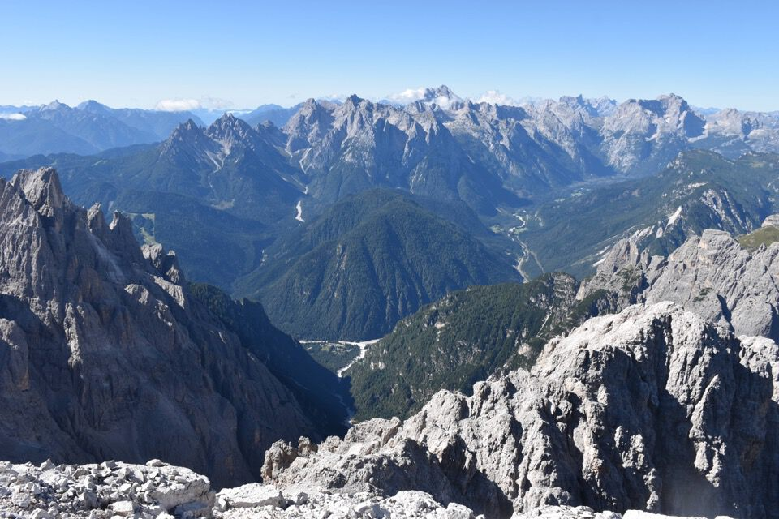
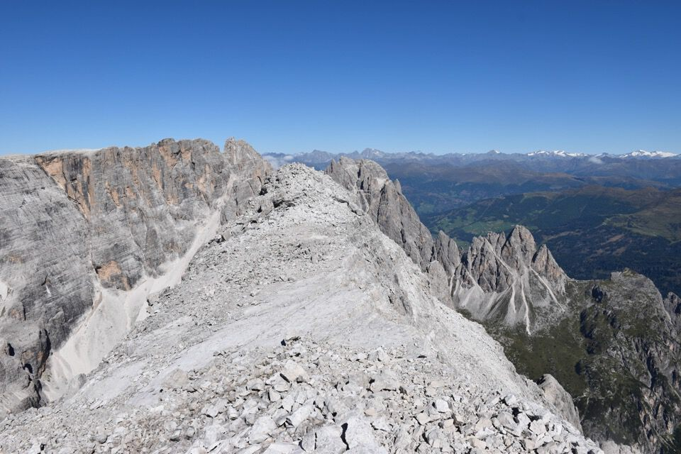
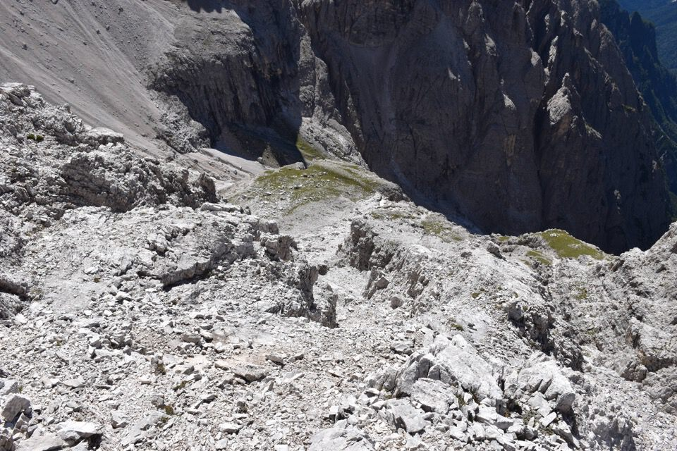
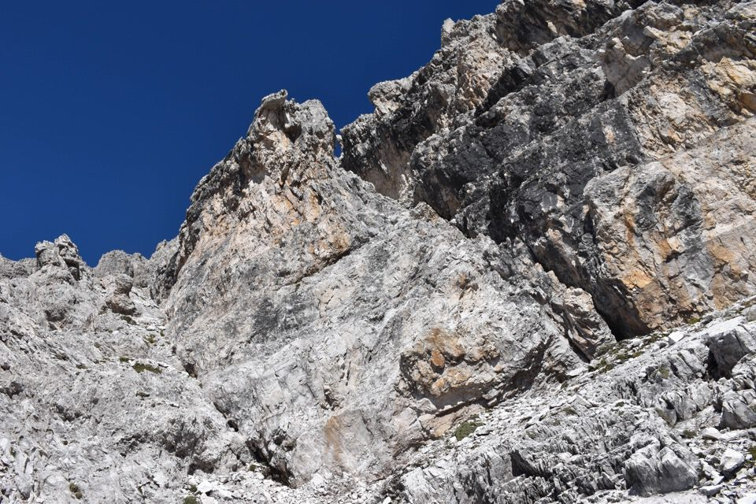
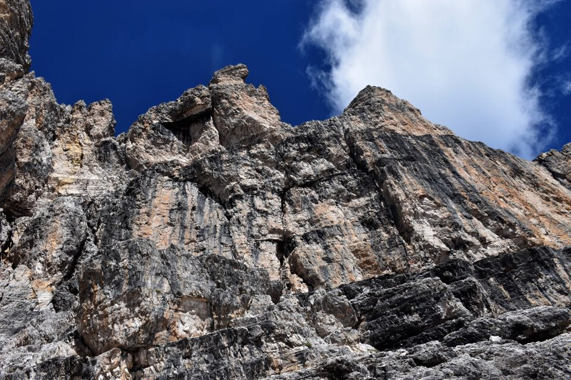

Cima Bagni: montagna imponente, regale e maestosa.
Italo Zandonella Callegher, cantore della Bagni, scrive: «Ho sempre considerato la Cima Bagni, con i suoi quasi 3000 metri di altezza (2983) come il colosso più maestoso del Popèra e una delle montagne più misteriose, selvagge e imponenti delle Dolomiti. Pensate come apparirebbe se fosse un po' più solitaria, cioè un tantino più discosta dalla barriera Monte Popèra-Monte Giralba e dal complesso Ambata-Ligónto che la costringono a nascondersi non poco... Potrebbe stare tranquillamente al passo con Pelmo e Antelao che, in romita beatitudine, si elevano direttamente dai boschi e dai prati d'alta quota senza nessun seccatore al fianco.
Così l'ho sempre sognata: sola, superba, altissima.».
Occorre ricordare Santo Siorpaes, leggendaria guida ampezzana: anche qui fu primo! Primo salitore del Cristallo, della Tofana I, della Croda Rossa, del Duranno, della Cima dei Preti, del Siera, ecc.!
Certo, primo ma con le solite accortezze: essendo il Cadin del Biso luogo di caccia, non è inverosimile pensare che qualche cacciatore sia salito sulla larga bancata della via Siorpaes, da cui il passo per la cima è relativamente breve.
A proposito della mia via di salita (Innerkofel e Fikeis), leggiamo ciò che scrive Wratislaw Fikeis (qui, in Mitteilungen des Deutschen und Österreichischen Alpenvereins 1878).
«Col dei Bagni. Per scalare questa cima, situata in una nuova zona turistica, ho trascorso la notte con la stessa guida dal 29 al 30 luglio 1879, a sud del Kreuzberg (Valle di Sesto) sopra l'Alpe Sopra Piana, vicino al Lago Cadino. Partenza alle 5 del mattino attraverso boschi di mughi e nevai fino alla Keesklamm (piccolo ghiacciaio) e alla gola della cresta. Da lì, verso destra, all'incirca alla stessa altezza della gola, attraverso rocce frastagliate fino alla vetta, verso un ampio canalone nevoso che conduceva lì. Per raggiungerla, bisognava attraversare dal lato destro della cresta verso sinistra, verso il "Deutsche Karl", risalire per un breve tratto lungo la cresta e poi risalire sul lato destro della cresta. Quindi, si saliva attraverso il canalone nevoso fino alla struttura sommitale ricoperta di ghiaioni e si raggiungeva facilmente la vetta (alle ore 11.15). Lì è stato trovato un vecchio ometto di pietra fatiscente, senza alcun dettaglio sulla salita; probabilmente, un cacciatore di camosci ha raggiunto la vetta dal versante auronziano (a quanto pare non particolarmente difficile) attraverso la Val Giralba alta (Giralba interna).
La vista, soprattutto sulla valle italiana, era magnifica. La discesa ha richiesto 1 ora in direzione della salita; 3,5 ore per raggiungere il campo; da lì, attraverso il passo di Monte Croce, si è tornati a Sesto.
Il Col dei Bagni è probabilmente circa 50 m più basso della cresta Hochbrunner (monte Popera, NdR)»
Salita la cima d'Ambata di notte per vedere l'alba in cima, scendo giù al bordo inferiore del cadin e prendo la «cengia dei camosci» in direzione forcella Bagni.
Do una spiata al Cadin del Biso ancora in ombra.
L'articolato castello di cima Bagni.
Con percorso assai complicato si evita in versante Comelico il gran salto di cresta che incombe sulla forcella.
Da notare in centro l'agghiacciante «torre che crolla». Sembra che Johann Innerkofel (fratello di Michl) e Wratislaw Fikeis nel 1879 da qui scesero per scaglioni e cengette fino al canalone nevoso sotto alla «torre che crolla». Attualmente invece si continua in quota raggiungendo il canalone molto più in alto (e sopratutto sopra all'inquitante torre!).
Il mio silenzioso compare.
La «cengia della falce»: non capisco perché i vari autori insistano con questa tremenda cengia, quando è ben più sicuro salire il camino (II) e scendere dall'altra parte (II+, spuntone per corda), come ho fatto io e come è consigliato sul sito OrmeVerticali.

Qualcuno mi spia da forcella Anna!
Eccomi finalmente in vista del canalone: arrivati in forcella manca solo la parte «facile» della salita.
Dentro il friabile canalone.
Eleganti s'elevano sopra il Cadin del Biso la cima d'Ambata e la croda de Ligonto.
L'ultima parte è facile ma faticosa.
Bellissima e turrita la croda de Ligonto.
Quassù da solo: faccio fatica a crederlo!
Panorama superbo oltremisura verso la bastionata Giralba — Popèra che incombe sulla val Stallata.
Verso le val d'Ansièi e le Marmarole.
Non disto poi molto dai Tauri: qui i bei ghiacciai del Grossvenediger...
...e qui il Grossglockner.
Pulpito eccezionale.
Molto bella la Croda Rossa di Sesto. Sullo sfondo le Vedrette di Ries, con il Collalto.
Popera e Cima Undici. Non si da dove guardare in questi posti!
La Croda dei Toni, con dietro la Croda Rossa d'Ampezzo.
E anche le Marmarole: guarda che bello l'avvallamento della Val Longa.

Meglio iniziare a scendere perché qui la faccenda è assai lunga. Anziché tornare per la via di salita, decido di scendere per la più facile via dei primi salitori (Siorpaes con Holzmann nel 1874), quindi qua giro a dx percorrendo le larghe bancate in direzione opposta alla forcella.
Forcella Bagni: vicina ma nel mezzo c'è un saltone! Tocca fare il giro del mondo.
I larghi terrazzamenti della via Siorpaes.
È molto facile capire quando abbandonare la bancata: quando questa, oltre un canalone, diventa stretta cengia. Si scende lungo il costoncino prima del canalone.
La via Siorpaes sarebbe di I° grado, ma dall'alto non è sempre facile capire dove andare: proprio all'ultimo il facile canale-fessura (a dx) che ho seguito mi ha costretto a disarrampicare un saltino di III°.
Nel fondo del Cadin del Biso: tiro un sospiro di sollievo!
Ottimo il fatto che nel Cadin si trovano molti ruscelli (ed era il 31 agosto).
Lassù forcella Bagni: una risalita che penosa è dir poco.
Almeno ho l'occasione per visitare i bei landri del cadin.
I colori sgargianti delle pareti.
Non resta che ripercorrere a ritroso la «cengia dei camosci».
Lì sotto forcella Anna che con il buio non avevo visto.
L'alta val d'Ambata, con l'ominima forcella a sx, a dx per un pelo non si vede il bivacco Gera dove ho dormito.
Cima di Padola e Croda di Tacco, che a me piacciono tanto.
Che giornata meravigliosa!

Ultimo salito a cima Bagni: non mi sembra vero...
E giù per l'interminabile e scomodo canalone di forcella Anna.
***
«Così scendiamo dai monti, riprendendo alla svolta l'abito di ogni giorno intessuto di avvilenti compromessi. In questi dolorosi ritorni, nel conflitto tra lo spirito pacificato e la materia asservita a odiose necessità è la radice dell'inquietudine, la genesi di una malinconia senza rimedio.»
(Dario Marini, Ritorno, AG 69)